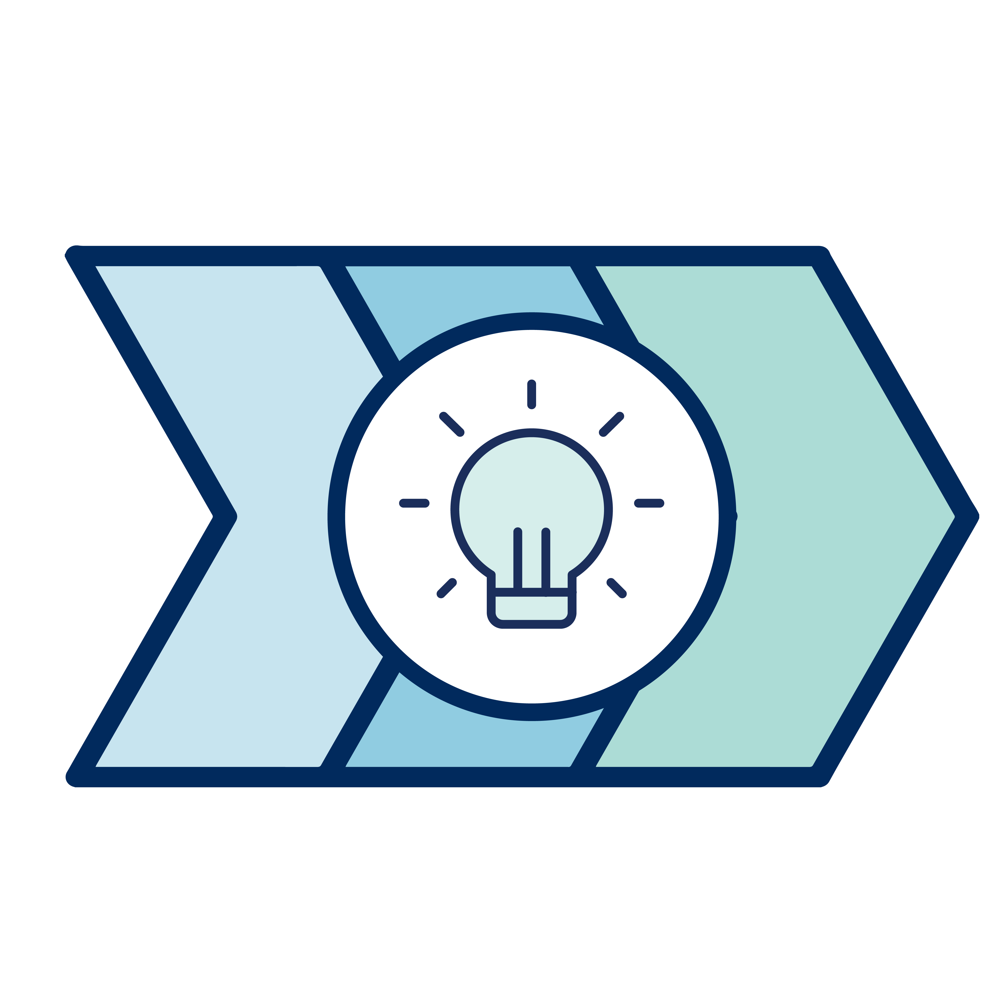

TIL Advisory


With quality teaching as one of the University's core missions, instructional space plays a crucial role in fulfilling this aim. As a steward of these important facilities, Learning Space Management (LSM) is committed to developing accessible, innovative, and effective purpose-built classrooms that support the needs of all stakeholders.
The Transforming the Instructional Landscape (TIL) project seeks to redesign 174 classrooms in 23 buildings across the St George Campus, totaling an area of 15,700 NASM. A project of this scope ill impact almost 6,000 courses, and potentially enhance the experience of almost every student and instructor on campus.
As our aim is to redesign classrooms with rather than for our user groups, direct engagement with instructors and students is key to this initiative's success. Through feedback and observations gathered from the user groups, we can produce a plan that meets our users' needs. Partnering with CTSI and the Innovation Hub, employing Design Thinking Principles, and applying intelligent and responsive design practices, this project aims to transform instructional space within the classroom and throughout the broader Campus community.
The advisory committee will provide guidance to these conversations to ensure that the overall goals of the University's teaching mission, along with the goals of local divisions and departments, are achieved.
In order to be successful, the mandate of the advisory committee will be:
Looking to get in touch with TIL? We’d love to hear from you!
CONTACT US >